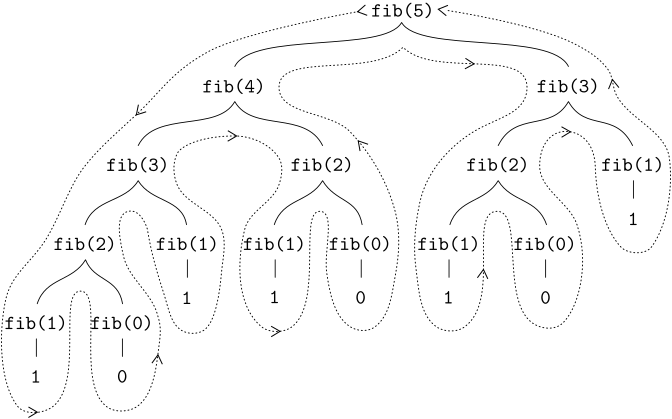

Another common pattern of computation is called tree recursion.
As an example, consider computing the sequence of
Fibonacci numbers,
in which each number is the sum of the preceding two:
We can immediately translate this definition into a recursive
function
for computing Fibonacci numbers:
この定義は、フィボナッチ数を計算する再帰的な関数に直接変換できます。
function fib(n) {
return n === 0
? 0
: n === 1
? 1
: fib(n - 1) + fib(n - 2);
}

Figure 1.10 The tree-recursive process generated in computing
fib(5).
Consider the pattern of this computation. To compute
fib(5),
we compute
fib(4)
and
fib(3).
To compute
fib(4),
we compute
fib(3)
and
fib(2).
In general, the evolved process looks like a tree, as shown in
figure 1.10.
Notice that the branches split into
two at each level (except at the bottom); this reflects the fact that the
fib
function
calls itself twice each time it is invoked.
This
function
is instructive as a prototypical tree recursion, but it is a terrible way to
compute Fibonacci numbers because it does so much redundant computation.
Notice in
figure 1.10
that the entire
computation of
fib(3)—almost
half the work—is
duplicated. In fact, it is not hard to show that the number of times the
function
will compute
fib(1)
or
fib(0)
(the number of leaves in the above tree, in general) is precisely
$\textrm{Fib}(n+1)$. To get an idea of how
bad this is, one can show that the value of
$\textrm{Fib}(n)$
grows exponentially with $n$. More precisely
(see exercise 1.13),
$\textrm{Fib}(n)$ is the closest integer to
$\phi^{n} /\sqrt{5}$, where
Thus, the process uses a number of steps that grows exponentially with the
input. On the other hand, the space required grows only linearly with the
input, because we need keep track only of which nodes are above us in the
tree at any point in the computation. In general, the number of steps
required by a tree-recursive process will be proportional to the number of
nodes in the tree, while the space required will be proportional to the
maximum depth of the tree.
We can also formulate an iterative process for computing the Fibonacci
numbers. The idea is to use a pair of integers $a$
and $b$, initialized to
$\textrm{Fib}(1)=1$ and
$\textrm{Fib}(0)=0$, and to repeatedly apply the
simultaneous transformations
\[\begin{array}{lll}
a & \leftarrow & a+b \\
b & \leftarrow & a
\end{array}\]
It is not hard to show that, after applying this transformation
$n$ times, $a$ and
$b$ will be equal, respectively, to
$\textrm{Fib}(n+1)$ and
$\textrm{Fib}(n)$. Thus, we can compute
Fibonacci numbers iteratively using the
function
function fib(n) {
return fib_iter(1, 0, n);
}
function fib_iter(a, b, count) {
return count === 0
? b
: fib_iter(a + b, a, count - 1);
}
This second method for computing $\textrm{Fib}(n)$
is a linear iteration. The difference in number of steps required by the two
methods—one linear in $n$, one growing as
fast as $\textrm{Fib}(n)$ itself—is
enormous, even for small inputs.
One should not conclude from this that tree-recursive processes are useless.
When we consider processes that operate on hierarchically structured data
rather than numbers, we will find that tree recursion is a natural and
powerful tool.
But
even in numerical operations, tree-recursive processes can be useful in
helping us to understand and design programs. For instance, although the
first
fib
function
is much less efficient than the second one, it is more straightforward,
being little more than a translation into
JavaScript
of the definition of the Fibonacci sequence. To formulate the iterative
algorithm required noticing that the computation could be recast as an
iteration with three state variables.
It takes only a bit of cleverness to come up with the iterative Fibonacci
algorithm. In contrast, consider the following problem:
How many different ways can we make change of
$1.00 (100 cents),
given half-dollars, quarters, dimes, nickels, and pennies
(50 cents, 25 cents, 10 cents, 5 cents, and 1 cent, respectively)?
More generally, can
we write a
function
to compute the number of ways to change any given amount of money?
This problem has a simple solution as a recursive
function.
Suppose we think of the types of coins available as arranged in some order.
Then the following relation holds:
The number of ways to change amount $a$ using
$n$ kinds of coins equals
the number of ways to change amount $a$
using all but the first kind of coin, plus
the number of ways to change amount $a-d$
using all $n$ kinds of coins, where
$d$ is the denomination of the first kind
of coin.
To see why this is true, observe that the ways to make change can be divided
into two groups: those that do not use any of the first kind of coin, and
those that do. Therefore, the total number of ways to make change for some
amount is equal to the number of ways to make change for the amount without
using any of the first kind of coin, plus the number of ways to make change
assuming that we do use the first kind of coin. But the latter number is
equal to the number of ways to make change for the amount that remains after
using a coin of the first kind.
Thus, we can recursively reduce the problem of changing a given amount to
problems of changing smaller amounts or using fewer kinds of coins. Consider
this reduction rule carefully, and convince yourself that we can use it to
describe an algorithm if we specify the following degenerate
cases:
(The
first_denomination function
takes as input the number of kinds of coins available and returns the
denomination of the first kind. Here we are thinking of the coins as
arranged in order from largest to smallest, but any order would do as well.)
We can now answer our original question about changing a dollar:
The function count_change
generates a tree-recursive process with redundancies similar to those in
our first implementation of fib.
On the other hand, it is not
obvious how to design a better algorithm for computing the result, and we
leave this problem as a challenge. The observation that a
tree-recursive process may be highly inefficient but often easy to specify
and understand has led people to propose that one could get the best of both
worlds by designing a smart compiler that could transform
tree-recursive
functions
into more efficient
functions
that compute the same result.
A function $f$ is defined by the
rules
$f(n)=n$ if $n < 3$
and $f(n)={f(n-1)}+2f(n-2)+3f(n-3)$ if
$n\ge 3$. Write a
JavaScript function
that computes $f$ by means of a recursive process.
Write a
function
that computes $f$ by means of an iterative
process.
Write a
function
that computes elements of Pascal's triangle by means of a recursive
process.
再帰的プロセスによってパスカルの三角形の要素を計算する関数を書いてください。
Assuming that we count the rows of the triangle from the top starting
at 1 and the numbers in each row using indices from left to right
starting at 1, the following function computes the number in the
triangle in a given row at a given index.
Hint: Use induction and the
definition of the Fibonacci numbers to prove that
$\textrm{Fib}(n)=(\phi^n-\psi^n)/\sqrt{5}$,
where
$\psi= (1-\sqrt{5})/2$.
First, we show that
$\textrm{Fib}(n) =
\dfrac{\phi^n-\psi^n}{\sqrt{5}}$,
where
$\psi = \dfrac{1-\sqrt{5}}{2}$
using strong induction.
$\textrm{Fib}(0) = 0$
and
$\dfrac{\phi^0-\psi^0}{\sqrt{5}} = 0$
$\textrm{Fib}(1) = 1$
and
$\dfrac{\phi^1-\psi^1}{\sqrt{5}} =
\dfrac{\dfrac{1}{2}\left(1+\sqrt{5} - 1 + \sqrt{5}\right)}{\sqrt{5}} = 1$
So the statement is true for $n=0,1$.
Given $n \geq 1$, assume the proposition
to be true for $0, 1, \dots , n$.
$\textrm{Fib}(n+1) =
\textrm{Fib}(n) + \textrm{Fib}(n-1) =
\dfrac{\phi^n-\psi^n + \phi^{n-1} - \psi^{n-1}}{\sqrt{5}}$
$= \dfrac{\phi^{n-1}(\phi + 1) -
\psi^{n-1}(\psi + 1)}{\sqrt{5}}$
$=\dfrac{\phi^{n-1}(\phi^2) - \psi^{n-1}(\psi^2)}{\sqrt{5}}
= \dfrac{\phi^{n+1} - \psi^{n+1}}{\sqrt{5}}$,
so the statement is true.
Notice that since $|\psi| < 1$ and
$\sqrt{5} > 2$, one has
$\left|\dfrac{\psi^n}{\sqrt{5}}\right| <
\dfrac{1}{2}$
Then the integer closest to
$\textrm{Fib}(n) + \dfrac{\psi^n}{\sqrt{5}} =
\dfrac{\phi^n}{\sqrt{5}}$ is
$\textrm{Fib}(n)$.
One approach to coping with redundant
computations is to arrange matters so that we automatically construct a
table of values as they are computed. Each time we are asked to apply the
function
to some argument, we first look to see if the value is already stored in the
table, in which case we avoid performing the redundant computation. This
strategy, known as
tabulation or
memoization, can be implemented in a
straightforward way. Tabulation can sometimes be used to transform processes
that require an exponential number of steps
(such as count_change)
into processes whose space and time requirements grow linearly with the
input. See exercise 3.27.
The elements
of Pascal's triangle are called the binomial coefficients,
because the $n$th row consists of
the coefficients of the terms in the expansion of
$(x+y)^n$. This pattern for computing the
coefficients
appeared in
Blaise Pascal's 1653 seminal work on probability theory,
Traité du triangle arithmétique.
According to
Edwards (2019), the same pattern appears
in the works of
the eleventh-century Persian mathematician
Al-Karaji,
in the works of the twelfth-century Hindu mathematician
Bhaskara, and
in the works of the
thirteenth-century Chinese mathematician
Yang Hui.